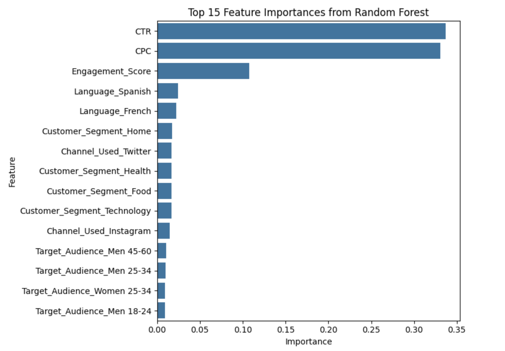
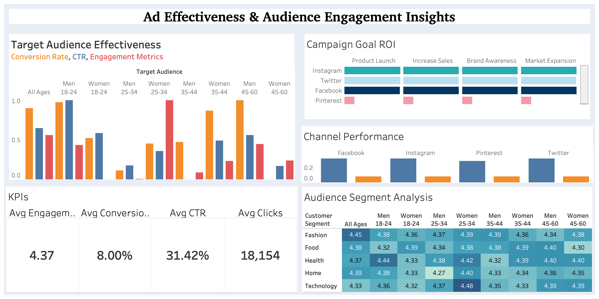

📱 Social Media Advertising Analysis
📌 Project Overview
This project analyzes the performance of social media advertising campaigns using a dataset that includes impressions, clicks, conversion rates, engagement scores, ROI, customer segments, and target audience demographics. We performed exploratory analysis, predictive modeling, and created a performance dashboard in Tableau to uncover actionable insights.
📈 Predictive Modeling: High Conversion Classification
We created models to predict whether a campaign would achieve high conversion (High_Conversion = 1) using various features like CTR, CPC, engagement score, and demographics.
Models Used
- Logistic Regression
- Decision Tree Classifier
- Random Forest Classifier
Results Summary
| Model | Accuracy | Recall (High Conversion) | Key Insight |
|---|---|---|---|
| Logistic Regression | 54% | 0.00 | Failed to identify positive class |
| Decision Tree | 52% | 0.24 | Some success identifying conversions |
| Random Forest | 54% | 0.02 | Poor recall, reliant on CTR/CPC |
Note: The overall accuracy and recall were low across all models, especially for predicting high-conversion campaigns. This was largely due to:
- Class imbalance: The dataset had a slightly uneven distribution of high vs. low conversion outcomes, which caused the models to favor the majority class.
- Weak predictors (without CTR/CPC): When behavioral metrics like CTR and CPC were excluded, the remaining features (e.g., language, segment, audience) lacked strong predictive power.
- High-importance behavioral variables: CTR, CPC, and Engagement Score were the most influential features in identifying high-conversion campaigns. Removing them significantly reduced model effectiveness.
🔍 Feature Importance (Random Forest)

When using all features:
- Top Predictors:
- CTR
- CPC
- Engagement Score
When excluding CTR and CPC:
- Top Predictors:
- Language
- Channel_Used
- Customer Segment
- Target Audience
📊 Tableau Dashboard

Dashboard Components:
- KPI Summary: Avg Engagement (4.37), Conversion Rate (8%), CTR (31.4%), Clicks (18,154)
- Target Audience Effectiveness: Shows normalized conversion, CTR, and engagement by age/gender group.
- Campaign Goal ROI: Product Launch campaigns had the highest average ROI (3.19).
- Channel Performance: Facebook, Instagram, and Twitter had high CTR but varied in conversion performance.
- Audience Segment Analysis: Women 25–34 and Men 18–24 emerged as high-engagement segments across several customer types.
📌 Key Insights & Recommendations
- Behavioral metrics like CTR, CPC, and Engagement Score are the strongest predictors of conversion success.
- Men 18–24 and Women 25–34 are ideal target segments for conversion and engagement.
- Twitter performs best across CTR, conversion, and engagement — a top all-round ad channel.
- Product Launch campaigns deliver the highest ROI.
- Future Strategy: Focus on high-engagement audiences with performance channels (Twitter), optimize conversion paths on Facebook/Instagram, and use ROI heatmaps to guide budget allocation.